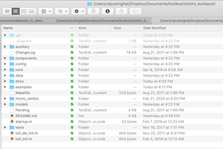

Tutorial I: Basic usage example
In this first tutorial, we discuss a simple usage of txtlsim.
Contents
Before working through this tutorial, we suggest some familiarity with how MATLAB Simbiology works. Some useful tutorials can be found here. As a minimum, we suggest working through the first two tutorials in the Modeling and Simulation section:
Initializing the toolbox
Set the working directory to the trunk directory of the toolbox. The trunk directory is where folders like "core", "config", "examples" and "components" live. Here is a snapshot of this directory on our computer.

Use this command to add the sub-directories needed to your matlab path. To be run each time you begin a new MATLAB session where you plan to run txtlsim.
txtl_init;
Negative Autoregulation - A simple example
Here we demonstrate the setup of a genetic circuit where a transcription factor represses its own expression.
Set up the standard TXTL "tubes". These are Simbiology model objects containing extract, buffer and DNA specific information. Before they are combined into a single object, we use the term 'tube' to refer to them. The following two commands set up the first two model objects with extract and buffer specific parameters. ``E2'' refers to a configuration .csv file where the parameters are stored. These files are kept in the "config'' directory in the trunk directory.
tube1 = txtl_extract('E2'); tube2 = txtl_buffer('E2'); % Now set up a tube that will contain our DNA tube3 = txtl_newtube('negautoreg'); % name the circuit txtl_add_dna(tube3, 'ptet(50)', 'utr1(20)', 'tetR(1200)', 1, 'plasmid'); txtl_add_dna(tube3, 'ptet(50)', 'utr1(20)', 'deGFP(1000)', 1, 'plasmid'); % Mix the contents of the individual tubes Mobj = txtl_combine([tube1, tube2, tube3]); % Run a simulaton, and return a Simbiology simData class object [simData] = txtl_runsim(Mobj,14*60*60); t_ode = simData.Time; % A number-of-timepoints length vector x_ode = simData.Data; % a number-of-timepoints by number-of-species matrix
Plot the result
The following function plots the proteins, RNA and resources in the toolbox. In the next section we delve deeper into the object oriented structure of the model, and how to plot arbitrary species in the model.
txtl_plot(simData,Mobj);
Current plot held

Alternate usage:
txtl_plot(t_ode, x_ode, Mobj);